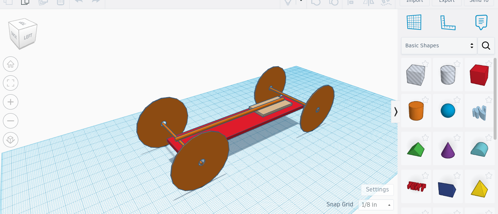

This week we Started designing our mousetrap car. I am teamed up with Jack.
We are going to make our mousetrap car go super far.
Our design is to make a longer car with a long rod so our car can go far. We will havea small wheel to axel ratio so we can be as efficent as possible.
I want to make sure that we not only make a good functioning car but also learn the engineering
procces further in depth.
This next quarter will be alot of fun.

This is my second website update
1. Last weekend i played over 10 hours of dnd and pathfinder
2. This week we started a new project with a mousetrap car.
3.Our design is to be very light so our car does not have to carry to much weight.
4.
5.Next week i hope to complete the cad and start building the body of our first car.
This is my third website update
This week me and jack wanted to finish our first mouse trap car.
We calculated that our car would go around 60 feet so we hope to see that happen.
This is my third website update
This week we finished our car and went 60 feet. Our car had an 11 inch rod with a 30 inch string. Our next car will have a longer rod and
a longer string. Our car next time will also have one wheel that will dcrease the weight and will be better.
This is my fourth website update
Me and Jack this week finished our second mousetrap car. In competition, our car went around 50 feet.
We achived our goal of around 45 feet so we were very happy about this. Our first car went around 45 feet.
Our second car went around 55 feet on one of the runs. Our first car had 4 wheels and was bending when we streched the rod all the way. Our second car had an extra layer of cardboard to stp the bening and had one wheel in the back to have less weight.
Our thrid car would still have one wheel, would have 1 less layer of cardbourad, and our wheel would be much much bigger.
This is my fifth website update
This week we started our new project. We are trying to make a device or container to help an egg survive a drop of around 30 feet. Our design is going to consist of a trianglar pyramid that is surounded by straws. There will also be two parachutes slowing the fall of our egg.
The weakest point on our egg device is probly the cushioning. We should add more cushioning becuase our egg might break on impact.
This is my sixth website update
Our eggdrop went pretty well. The egg container started falling slowly but then picked up its pace and then hit the ground. I was opening the container to get to the egg but as I was opening it I stuck my finger through the egg. The egg was already slightly cracked but with the massive muscles in my middle finger, my finger went straight through the egg.
This spring break, im going to teach jack how to ice skate and sleep alot and body slam jack into the wall. Hopefully i will also get to go to a robotics meeting.